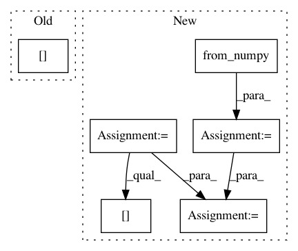

1f3da600c20e3376b0bb396bba482b1e90b7883c,i3nception_tf.py,,,#,34
Before Change
filter_idx = 5
py_out = py_to_tf_reshape(
out3d.data.numpy())[0][0][:, :, filter_idx].copy()
tf_out = tf_out3dsample[0][0][:, :, filter_idx].copy()
import pdb
pdb.set_trace()
max_v = max(tf_out.max(), py_out.max())
After Change
// init = tf.global_variables_initializer()
// sess.run(init)
for i, (input_2d, target) in enumerate(loader):
input_2d = torch.from_numpy(input_2d.numpy())
target = target.cuda()
target_var = torch.autograd.Variable(target)
// Pytorch forward pass
input_3d = input_2d.clone().unsqueeze(2).repeat(1, 1, frame_nb, 1, 1)
input_3d_var = torch.autograd.Variable(input_3d)
feed_dict = {}
input_3d_tf = input_3d.numpy().transpose(0, 2, 3, 4, 1) //
feed_dict[rgb_input] = input_3d_tf
// Get output
tf_out3dsample = sess.run(rgb_logits, feed_dict=feed_dict)
out_tf_np = tf_out3dsample.transpose((0, 4, 1, 2, 3))
out_tf = torch.from_numpy(out_tf_np)
unit_name_tf = "RGB/inception_i3d/Conv3d_1a_7x7/"
// Create state_dict
state_dict = {}
i3nception.load_conv3d(state_dict, "", sess, unit_name_tf)
unitpy.eval()
unitpy.load_state_dict(state_dict)
out_pt = unitpy(input_3d_var).data
out_pt_np = out_pt.numpy()
filter_idx = 0
// Plot slices
filter_idx = 0
img_tf = out_tf_np[0][filter_idx][0]
img_pt = out_pt_np[0][filter_idx][0]
max_v = max(img_tf.max(), img_pt.max())
min_v = min(img_tf.min(), img_pt.min())
plt.subplot(2, 2, 1)
In pattern: SUPERPATTERN
Frequency: 3
Non-data size: 6
Instances
Project Name: hassony2/kinetics_i3d_pytorch
Commit Name: 1f3da600c20e3376b0bb396bba482b1e90b7883c
Time: 2017-11-24
Author: yana.hasson@inria.fr
File Name: i3nception_tf.py
Class Name:
Method Name:
Project Name: dpressel/mead-baseline
Commit Name: 2eb4c5f77bd8da9b1e23851b0acb84543e442953
Time: 2018-09-24
Author: dpressel@gmail.com
File Name: python/baseline/pytorch/classify/model.py
Class Name: WordClassifierModelBase
Method Name: make_input
Project Name: pytorch/examples
Commit Name: a4e69725c0fa3d53312f546c185647e49d9e6602
Time: 2017-07-21
Author: Peterche1990@Hotmail.com
File Name: time_sequence_prediction/train.py
Class Name:
Method Name: